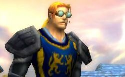

Guybruch
Points : 0

Joué par :
Guybruch Treepwood
Joué par :
[ Information masquée ]
Age : 22
Lieu de naisance : Kul Tiras
Sexe : Homme
Race : Humain
Faction : Alliance
Formation : Voleur
Niveau : 21
Guilde :
Garde de Stormwind (la)Artisanat 1 : Mineur
Artisanat 2 : Ingenieur
Description : On le sait originaire de Kul Tiras et ayant le pied marin.
Si vous demandez à un Garde qui est Guybruch, il vous dira que c'est un bon Garde binoclard qui ne se laisse pas faire et qu'il aime parfois lire et s'informer des affaires d'Azeroth et surtout de Lorderon.
Si vous vous rendez dans les ruelles sombres de Stormwind, vous pourrez peut etre par chance croisé un ancien de la Lacrima Noctra qui vous revelera pour une belle somme le traitre mot qu'il cache bien son jeu dans la Garde ou alors qu'il a sacrement changé.
Si vous demandez par inadvertance à un rescapé des Faucheurs Noctures, il pourra vous dire que ce maudit fils de putois a été la perte de son organisation si noble et un salopiot de petit espion.
Si vous posez la question à un homme du nom de Torbin, il vous avoura que c'est un fier défenseur de l'Alliance et ne s'étonnera pas qu'il soit rentré dans la Garde de Stormwind.
Si vous rencontrez Argrima, il réfléchira un peu avant de surment vous dire que c'est un brave menteur qui ne merite la confiance de personne.
Si vous abordez le sujet avec un Chasseur de Prime, il ne vous dira surment que c'était un bon, et qu'il ne comprend pas vraiment le fait qu'il se soit "ranger".
Enfin, si vous croisez un nain a la grande barbe du nom de Montgar, il vous déclara que c'est un fameur joueur de dès, et un véritable ami, loyal et fier.
Peut etre pour finir, vous tomberez sur quelques femmes ayant succombé a son charme, ses roses, son élégance et sa panache dans les combats à la rapière pour le coeur d'une femme.